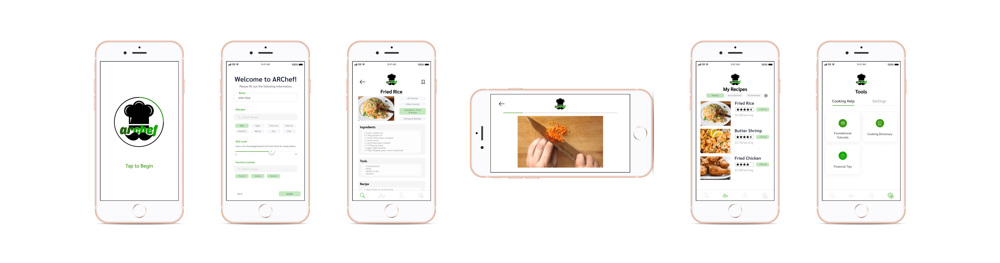
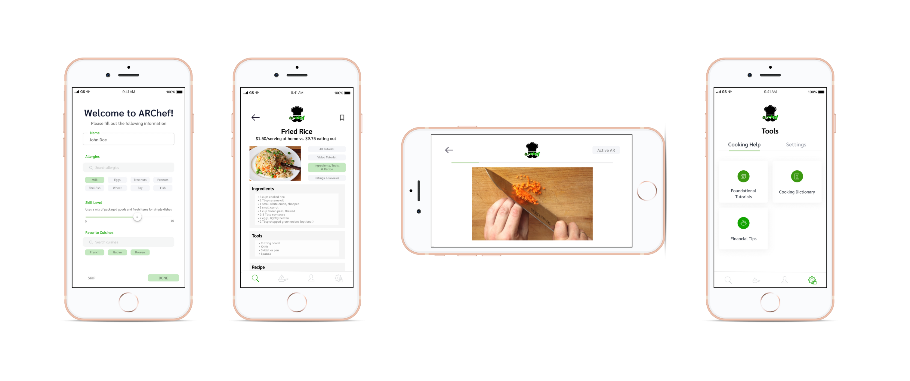

ARChef
Using augmented reality in recipe tutorials for beginner student cooks
Role: UX research & design
Tools: Figma, Balsamiq
Platform: Mobile
Time: 4 months
This was a semester-long group project for my Human-computer Interaction course in the Spring 2019 semester. Teams were allowed to pursue any problem and create any solution without consideration to technical constraints. Each group then sought out a client that had a professional background in their respective problem domain.
As the lead of our 5-person team, my main contributions were user interviews, client communication, design requirements, wireframes, and prototype designs.
Problem
Many college-aged students transition into independence from family meals and college meal plans with limited or no cooking ability due to the intimidating learning curve of cooking. This lack of knowledge may lead to poor health behaviors and financial decisions in the short-term with sustained unhealthy habits leading to serious health consequences in the long-term.
Question
How might we create an app that eases college students into home cooking in a non-intimidating and novel manner?
Solution
ARChef (Augmented Reality Chef) is a mobile app that builds upon existing impersonal cooking applications by utilizing AR to simulate an in-person recipe tutorial for beginner college student cooks. Main features include 3D visualizations of tools and ingredients, machine learning and image recognition through smartphone cameras, and foundational tutorials to emphasize cooking education.
Process
Research
Interviews
Student interviews
Each of our team members was responsible for conducting and taking notes for 2-3 interviews with college students, our envisioned user group. We coordinated as a team to make sure we covered a variety of student cooking abilities/backgrounds ranging from students with complete reliance on meal plans to those that enjoyed exploring new recipes. As a group, we conducted 11 interviews with 5 inexperienced, 2 semi-experienced, and 4 experienced student cooks.
To maintain interviewee anonymity throughout the design process, we assigned each interviewee an ID number (U1, U2, U3, etc.). Each team member was responsible for turning their raw interview notes into work activity notes, which were labeled by interviewee ID numbers.
We compiled our collective 100+ work activity notes and organized them into a work activity affinity diagram to inform our design requirements. To do this, we employed a bottom-up approach to build clusters of related notes before determining higher-level categories. A team member then digitized this diagram for ease of future reference.
These ideas were frequently echoed in the work activity notes:
- Motivation: Students want/need to cook to sustain themselves, become more independent, and save more money - All interviewees
- Barrier: Students believe that cooking is time-consuming and intimidating because of the initial learning curve - 9/11 interviewees
- Barrier: Students can't tell when something is done cooking - 6/11 interviewees
- Support/instruction: Students rely on friends and family for personal cooking aid - 5/11 interviewees
- Support/instruction: Students use online video and text recipes - 6/11 interviewees
Client interview
Our client was a registered dietitian at UVA who promotes balanced lifestyles through her cooking classes geared towards college students. She offered us insight into student cooking from her teaching experience, emphasizing the importance of the following in the context of student life:
- Cost efficiency: Cooking at home saves more money compared to eating out.
- Personalization: Each students' life situations are unique, so our solution must be able to accommodate different diets, time restrictions, etc.
- Incremental and foundational learning: These two ideas break down the intimidating learning curve of cooking and allow students to gradually build their confidence for more complex dishes.
Ideation
Persona
Once we narrowed our users down to college-aged students, a team member established our primary persona as Achilles Stamos, a second-year Kinesiology major at UVA new to cooking.
- Ability: Previously relied on his parents and meal plan for food; little cooking knowledge
- Goal: Build upon his minimal kitchen skills; lose the Freshman 15 with a nutritious diet
- Constraints: Needs to stick to a monthly food budget; busy schedule prevents him from dedicating extensive time to cooking
Design requirements
Based on interviews in the research phase, we mapped each insight onto a design requirement and brainstormed a corresponding app feature. A small sample of these mappings onto our main app features are included below.
Insight
Students rely on friends, family, and visual tutorials for cooking aid; students believe that cooking is intimidating
Requirement
Simulated in-person recipe tutorial
Feature
3D augmented visualizations onto user workspace so users can mirror instructions
Insight
Students can’t tell when something is done cooking
Requirement
Visual aid for doneness reference
Feature
Machine learning and image recognition through smartphone cameras to alert cook of completion or mistake
Insight
Importance of incremental and foundational learning
Requirement
Skills-based tutorials
Feature
Optional foundational tutorials
Insight
Students want to cook to save money
Requirement
Incorporate financial savings
Feature
Cost comparison for each recipe with local restaurant prices
Conceptual designs & sketches
With the above features in mind, we each created sketches of conceptual designs from different perspectives as well as ideas for app layouts.

My sketch of the ecological perspective to show how the app would be used in the kitchen.

My teammate's storyboard sketch of the ecological perspective to show how the app could help students with busy schedules.

My teammate's storyboard sketch of the emotional perspective to show how ARChef could build confidence.
Sketches of app layout created by combining elements from our individual sketches.
Wireframes & critiques
I created the following low fidelity wireframes for our round-robin design critique in which teams rotated around the class to give each other feedback. In addition to gathering first impressions, we came in with these specific questions:
- How do you feel about different options for app navigation in terms of more navigation tabs (visibility with flat hierarchies) or less navigation tabs (simplicity with deep hierarchies)?
- How do you feel about the addition of a social aspect to ARChef where students can follow each other, have recipe photo feeds, etc.?
- How do you feel about using accessories with this app such as AR glasses?
Further considerations
After considering features such as AR, machine learning, and image recognition, we recognized the difficulty of switching between phone usage and cooking. We then decided to implement voice commands and create a Still Mode and Active AR Mode.
- Still Mode: Hands-off, projects the 3D visualizations onto a user-captured still image of the kitchen workspace so that students can set their phone down and follow along while cooking
- Active AR Mode: Hands-on use of phone for app’s machine learning and image recognition technology to determine if user is ready to move to the next recipe step or if they're at risk of making a mistake (i.e. burning, overcooking)
Design

Personalization: We included an onboarding questionnaire for users to customize their experience, eliminating any additional barriers to starting the learning process for cooking.
Financial benefits: To further incentivize home cooking, the cost comparison of cooking at home versus eating out is shown on each recipe page.
Visual guidance: The AR tutorial, in combination with machine learning and image recognition technology, walks the user through each step of the recipe. This novel approach, inspired by Pokémon Go and Snapchat's uses of 3D visualizations, reduces the intimidation factor found in rushed recipe videos from professional chefs or the impersonal feel of a recipe text.
Cooking education: To further emphasize foundational skills, we included tutorials that students can utilize to reach their personal cooking goals.
Reflection
Since this project was purely design-based and not technically-constrained, we explored options that may not be realistic in implementation. For this project to move further, we would have to put much more consideration into feasibility and conduct further research into technical limits with augmented reality and machine learning.
While we had fun entertaining the idea of recipe tutorials with 3D visualizations and building out how this technology would fit into kitchen usage, I would give more careful consideration to the recipe screens in the next design iteration. Although an AR tutorial adds a fun and novel aspect to cooking, an overwhelming recipe page may discourage users from continuing to or reaching the AR tutorial, which would add an additional barrier to the learning process.